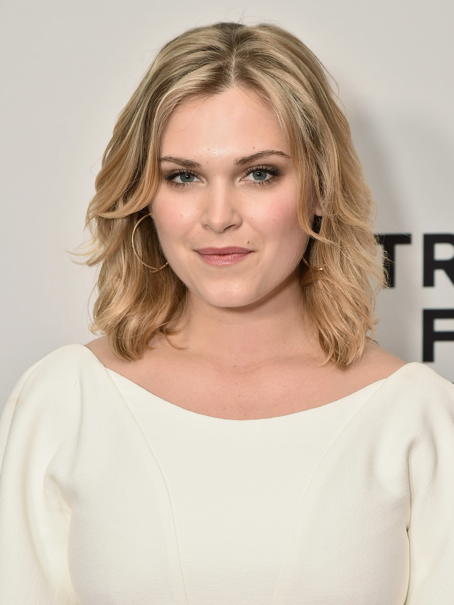
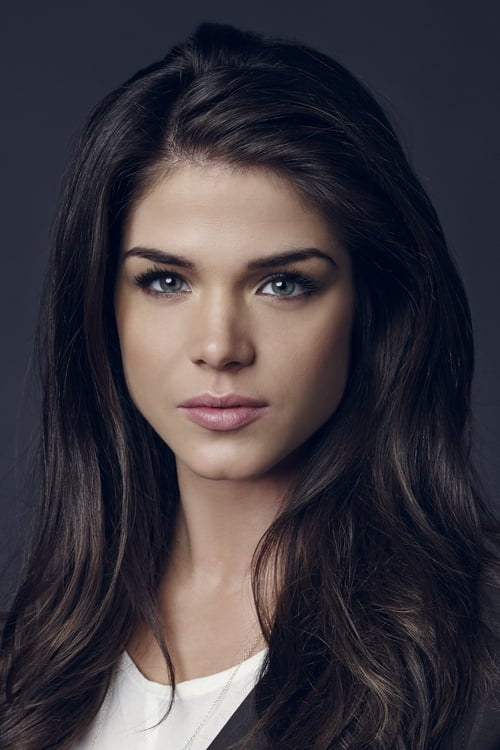
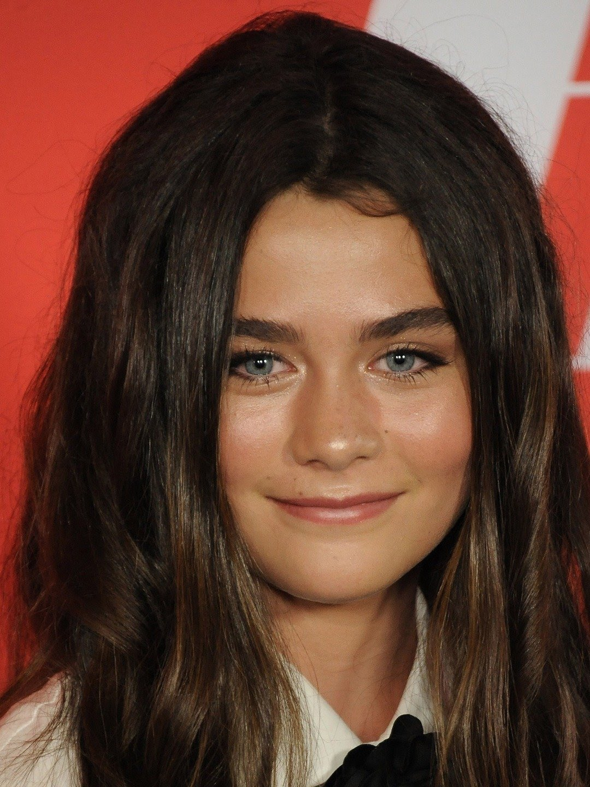

Clarke Griffin
Eliza Jane Taylor Morley, é uma atriz australiana que nasceu em 1989(32 anos). É mais conhecida por interpretar a protagonista Clarke Griffin na série de ficção científica e pós-apocalíptica The 100.
Bellamy Blake
Robert Alfred Morley, é um ator e diretor australiano que nasceu em 1984(37 anos). É mais conhecido por interpretar Bellamy Blake na série de ficção científica e pós-apocalíptica The 100 do canal The CW.

Octavia Blake
Marie Avgeropoulos é uma atriz e modelo canadense de origem grega que nasceu em 1986(35 anos). É mais conhecida por interpretar Octavia Blake na série de ficção científica The 100 do canal The CW.

Raven Reyes
Lindsey Marie Morgan é uma atriz americana, nasceu em 1992(30 anos). Ela é mais conhecida por seus papéis como Raven Reyes, na série de televisão The 100 e como Kristina Davis na soap opera General Hospital.

Abigail Griffin
Jean Paige Turco é uma atriz estadunidense, nasceu em 1965 (57 anos). Ficou conhecida pelo seu papel na série The 100 interpretando a Dr. Abigail Griffin, mãe de Clarke Griffin, a principal protagonista na série da emissora The CW.

Madi Griffin
Lola Flanery nasceu em Los Angeles,ela começou sua carreira na frente das câmeras como modelo para campanhas como Gap, Roots & Target. Com 10 anos de idade, Lola decidiu se aventurar no mundo da atuação. Fez o papel de "filha" da Clarke Griffin,principal da série em The 100.